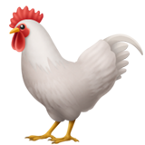

<p style="text-align: center;">
     
</p>
<script>
    let rooster = document.querySelector("img"); //selected our image
    let angle = Math.PI / 2 //half of PI
    function animate(time, lastTime) {
        //first lastTime willl be null
        if (lastTime != null) {
        angle += (time - lastTime) * 0.001; //calculate difference between two times 
        }
        rooster.style.top = (Math.sin(angle) * 20) + "px"; //adding pixel units
        //distance vertical
        rooster.style.left = (Math.cos(angle) * 200) + "px"; //adding px units
        //distance horizontal
        requestAnimationFrame(newTime => animate(newTime, time));
        //again this function with a new Time stamp for animate
    }

    requestAnimationFrame(animate); //calls animate function with a timestamp
</script>
